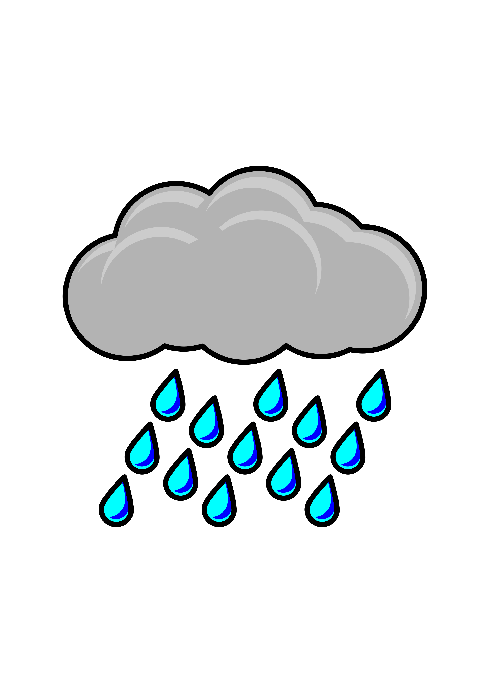
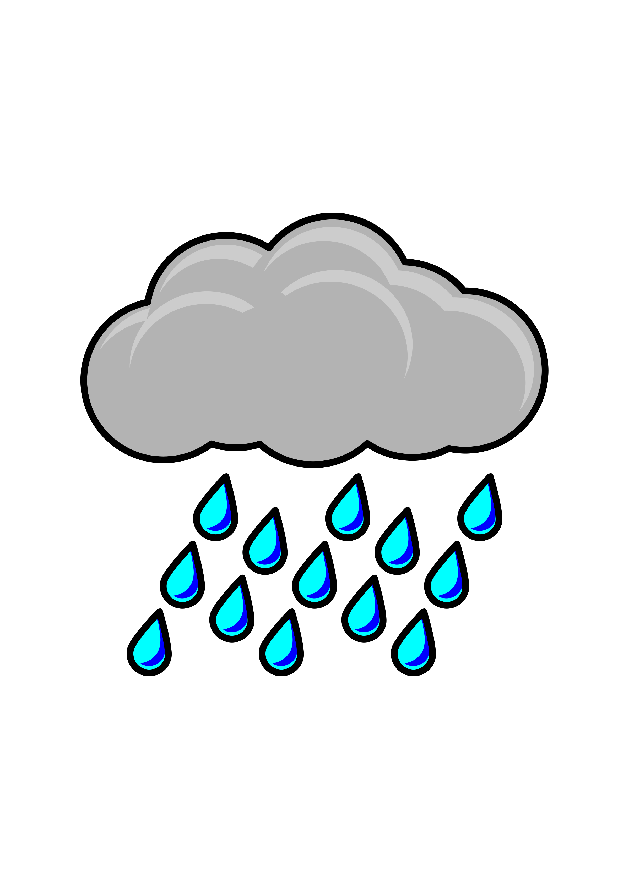

Preston Idaho

Weather Summary
Currently:
Temperature:
Humidity:
Presipitation:
Wind Speed:
5 Day Forescast
 

Tornado

Tornadoes demolish houses, flip cars, cross rivers, dig 3 foot (0.9 meter) trenches, and lift lightweight objects 10,000
feet (3048 meters) into the air. A tornado is a lethal combination of wind and power. Tornadoes touch down all over the
world, though most often in the United States.
A tornado is often a funnel cloud—a rotating column of air— that stretches from a storm to the ground. To be a tornado
it must touch the ground. It can touch down for a few seconds or grind across the earth for miles. Tornadoes usually
last less than 10 minutes.
Most tornadoes start from a supercell. A supercell is a rotating thunderstorm (called a mesocyclone). Supercells create
the deadliest tornadoes.
The formation of a tornado is so complex, scientists have yet to understand it. The unpredictable and deadly nature of
tornadoes also makes them difficult to study. No matter what movies show, scientists have had little success measuring
or getting equipment into tornadoes. Not only is it dangerous, a tornado demolishes everything in its path, including
measuring equipment. So, speeds and other factors remain a mystery.
The destruction caused by a tornado is undeniable and can be catastrophic. Though scientists will never be able to stop
a tornado, the more they know, the more they can keep people safe.